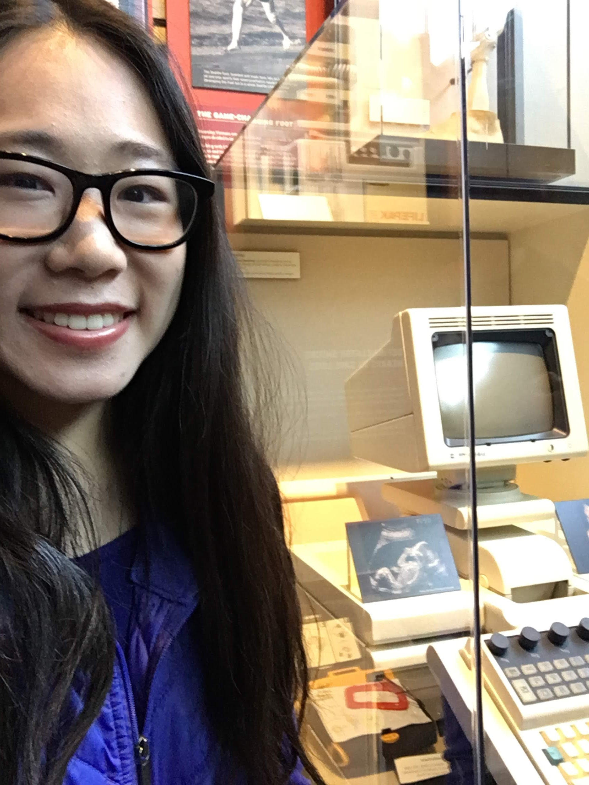

Academics
The courses that I took at UW have been transformational - they have helped me broaden my perspective, challenge my worldview, and think deeply about how I can apply my unique skill set to solving critical issues.
Each year, in addition to taking courses within my major, I made an effort to take a wide variety of classes to build my interdisciplinary knowledge base. Some of my favorite courses include CHIN 496 (a special topics course studying the history of Chinese Americans in Seattle, taught in both Chinese and English), HONORS 345 (a class focused on reading and writing about the literature of Seattle), and CSE 440 (a comprehensive, non-programming course on human-computer interaction).
CHIN 496 - Seattle: From Past to Present
Professor Chan Lü | Autumn 2019
As with many other parts of my UW experience, taking CHIN 496 was not planned in the slightest. After coming to college and having fewer opportunities to practice speaking Chinese, I decided to take a Chinese course at UW to sharpen my reading and writing skills. I originally enrolled in CHIN 111, First-Year Chinese for Heritage Learners. After two class sessions, I quickly recognized that the course did not fit my interests, and the instructor recommended for me to inquire about testing into a more advanced course. At Gowen Hall, I met with a handful of professors, all of whom briefly evaluated my language proficiency before referring me to a professor who was teaching a higher level course. Ultimately, after speaking with four professors and puzzling over which course would be the best fit, the head of the department encouraged me to sign up for CHIN 496, a new special topics course taught in both Chinese and English.
Despite joining the class late, the seminar-style course structure made it an inviting environment. I enjoyed learning more about the history of Chinese Americans in both Seattle and the United States as a whole, and cherished the opportunities to connect with my culture and improve my language proficiency. Whether we were learning about influential Chinese American figures or visiting the Wing Luke Museum and helping translate their materials, each class session was personally meaningful and empowering.
My final project for this course was a bilingual children's book on I.M. Pei (贝聿铭), the renowned Chinese American architect best known for designing the main entrance of the Louvre and the East Building of the National Gallery of Art. I was proud to research and honor the legacy of Pei, a trailblazing architect whose work and contributions helped bridge the gap between China and the United States.
HONORS 345 - Seattle: Reading and Writing the City
Professor Naomi Sokoloff | Spring 2019
As a first-year, I struggled with planning and balancing a class schedule that would include both CS and Honors classes. I had initially planned to take two CS classes (CSE 311 and CSE 351) during Spring 2019, but decided to drop CSE 351 at the last minute due to my concerns about managing my workload while I was out of town for the week-long Study Away program. In retrospect, I am positive that this was the right decision - I had more time to dedicate to my other courses, more flexibility to enjoy Seattle's beautiful spring weather, and more opportunities to meet new people and catch up with old friends.
In HONORS 345, I found it fascinating to read about the history of Seattle and to immerse myself in the "literary imagination" perceives and portrays the diverse stories of Seattle. We discussed a variety of works, such as poetry, fiction, and even song lyrics, all of which helped me develop a deeper appreciation for the city in which I live and study. The course module on the book, The Hotel on the Corner of Bitter and Sweet by Jamie Ford, was especially impactful for me. I had first read this book in middle school, and revisiting the novel after eight years of love, loss, and personal growth led to deeper takeaways and a greater appreciation for the truly bittersweet plot, characters, and relationships.
I sought to represent my analysis of this work in a creative way, and coordinated with the professor to combine my passion for baking with the course content. In addition to writing a short paper on the familial and cultural tensions represented in the book, I enjoyed brainstorming different culturally-relevant cake flavors to represent the bitterness and sweetness within the story, and spent hours perfecting an edible miniature version of the Panama Hotel. Although this was likely one of the most ambitious and unorthodox baking projects that I had undertaken, I found it to be an incredibly fun and memorable experience.


CSE 440 - Human-Computer Interaction
Professor James Fogarty | Winter 2020
Even though I had already learned about human-computer interaction (HCI) topics through accessibility research, I was excited to take this course and learn more about HCI and the design process. This was one of the first computer science classes that truly piqued my interest - I enjoyed attending in-person lectures, and I even found the homework assignments to be intriguing. The course revolved around one major group project, which was to develop an idea from start to finish. My group worked on understanding ways to make bullet journaling easier and more time efficient to promote mindfulness. I worked closely with my groupmates to explore the problem space, conduct user research, and design potential solutions.
Taking this class helped cement my passion and interest in human-computer interaction, and inspired me to continue searching for additional opportunities to engage with HCI concepts. To fulfill one of the Honors Additional Any requirements, I also completed an Honors Ad Hoc project for CSE 440 by following the design process to ideate and design a solution to make graphs more accessible to blind and low vision mathematicians. This project served as one of my first forays into individually scoping out an accessibility issue and investigating critical user needs, a skill that I have already drawn upon at UW and will be sure to build upon as I pursue graduate studies in this field.
In my junior and senior years, I had the privilege of being an undergraduate teaching assistant for CSE 440, which has been an incredibly rewarding experience. My journey as an undergraduate TA helped me realize how much I loved the area of HCI and accessibility, as well as how much I enjoyed interacting with and learning alongside students who were discovering their interests in this subfield as well. I am grateful to have had the opportunity to guest lecture about visual design and communication to 60 students in autumn 2021 - this experience was surreal, empowering, and affirming of my decision to pursue a PhD.
Other Favorites
CHIN 342 - Chinese Linguistics
HONORS 221 - Game Theory
ENTRE 472 / 473 - Creating a Company
HCDE 298 - Inclusive Design
Snapshots
The CHIN 496 class on a field trip and tour at the Wing Luke Museum!
Explored some antique computers at MOHAI for HONORS 345!